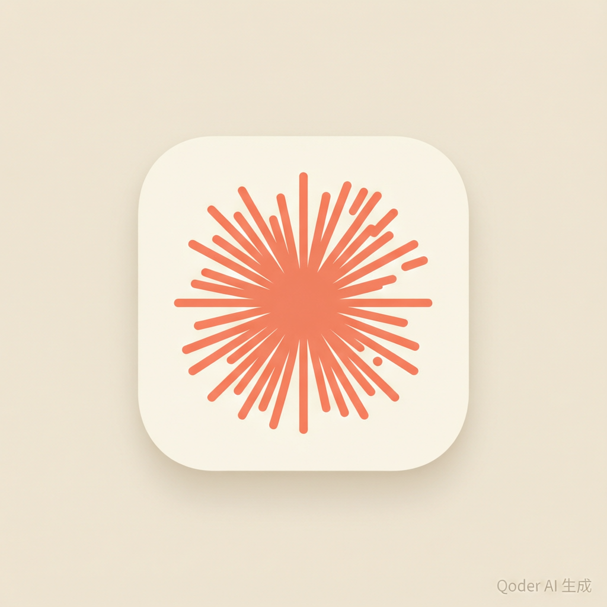
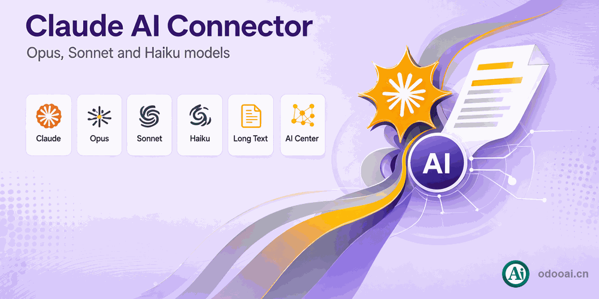

odooai.cn
Professional Odoo Solutions: Implementation, Consulting and Training


Connect Anthropic Claude to the Odoo AI Center for AI employees and chat channels
Use Claude models inside Odoo: private chat, group channels, robot training and access control in one place.
This module connects Anthropic Claude to the odooAi AI Center and reuses its robots, Discuss channels and training framework. It supports Opus 4.1, Sonnet 4.5, Haiku and other model generations, with native Anthropic Messages API integration, system prompts and image messages. Administrators bind the Claude API to users, configure white/black lists and sensitive-word filters, choose synchronous or asynchronous responses, and start or stop the service at any time.
Connect Anthropic Claude to the Odoo AI Center for AI employees and chat channels
Chat with Claude AI in Odoo for natural responses
Multiple Claude robot connectors with chat and training
Support Opus 4.1, Sonnet 4.5, Haiku and more models
Native Anthropic Messages API with system prompt and vision messages
Bind the Claude API to a user for private or group channel chat
White and black list management for AI access
Every capability included in this module
Full multi-language translation and global deployment. Native multi-company with strict data isolation.
Supports Odoo 20, 19, 18, 17, 16, 15, 14, 13, 12, Enterprise, Community and online SaaS.
Open source under LGPL-3, transparent and auditable, ready for customization.
Install AI Center
Configure Anthropic Key
Bind Robot and Users
Chat in Discuss

Professional Odoo Solutions: Implementation, Consulting and Training